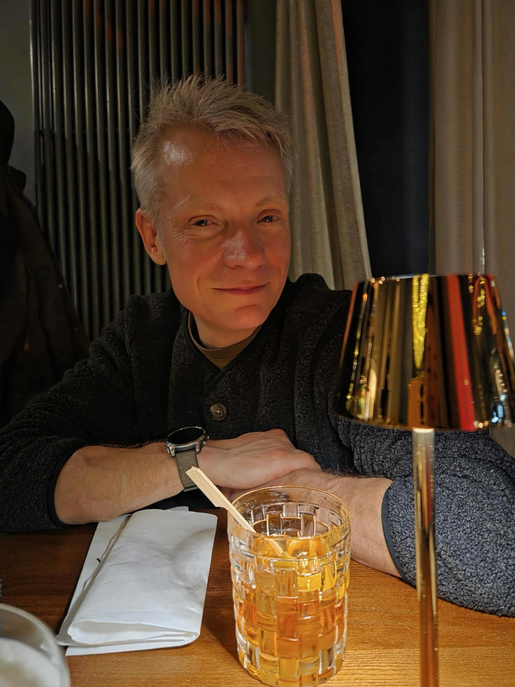
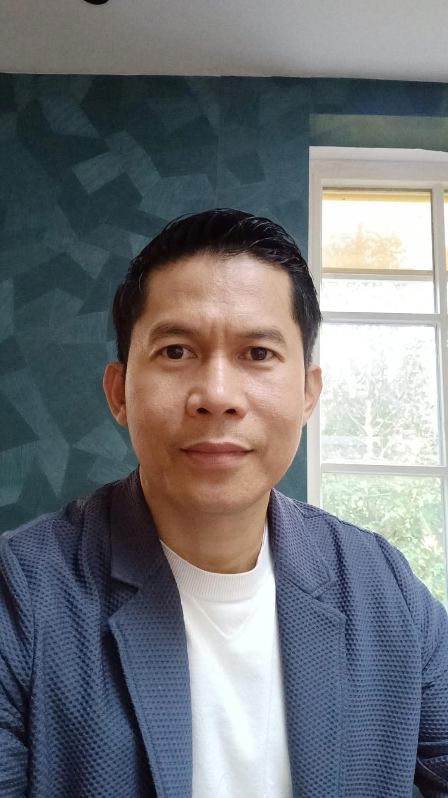
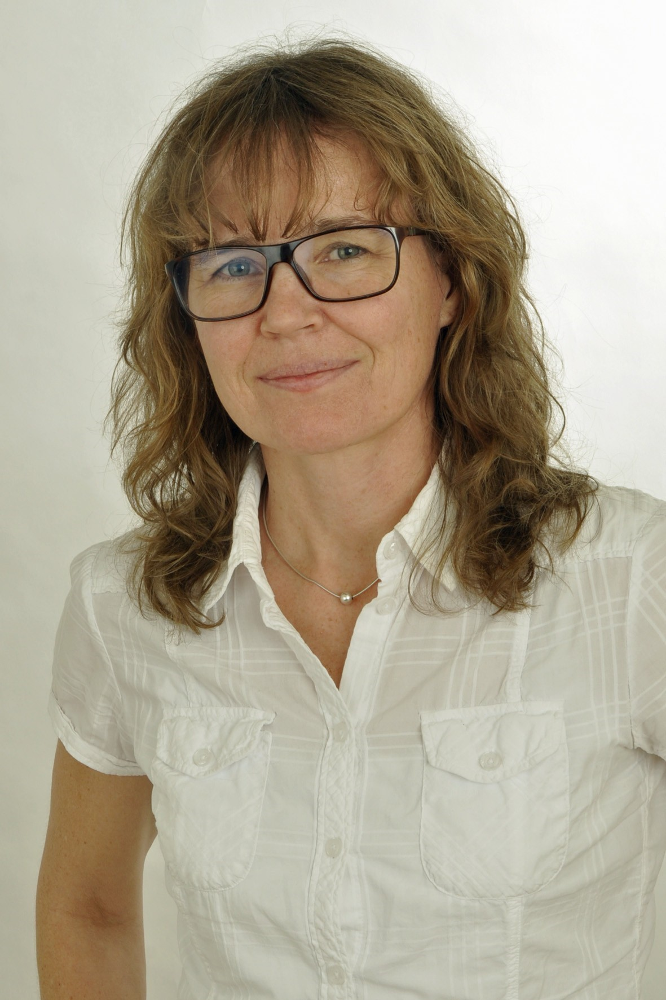
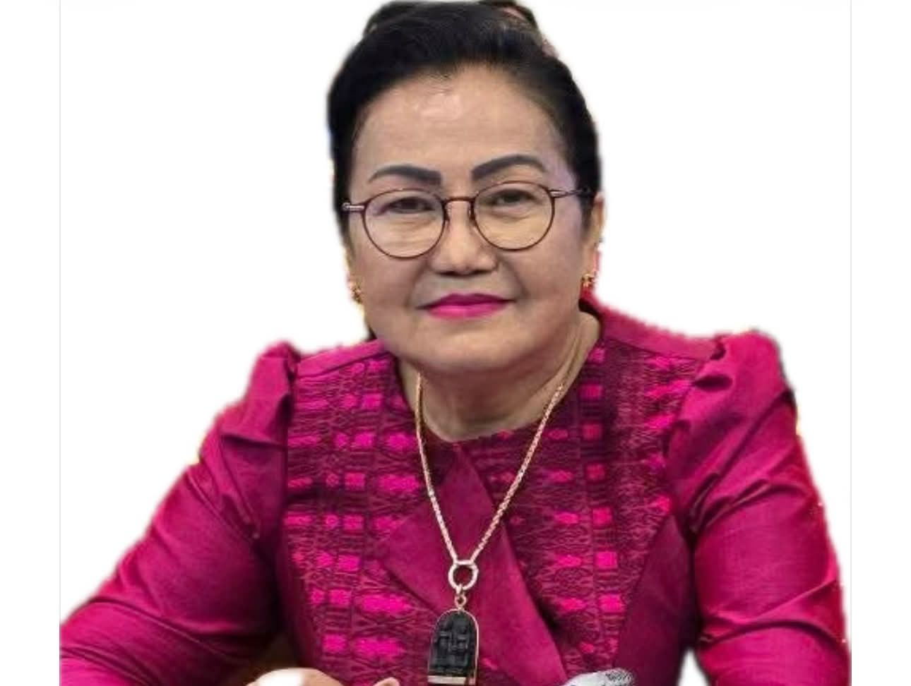
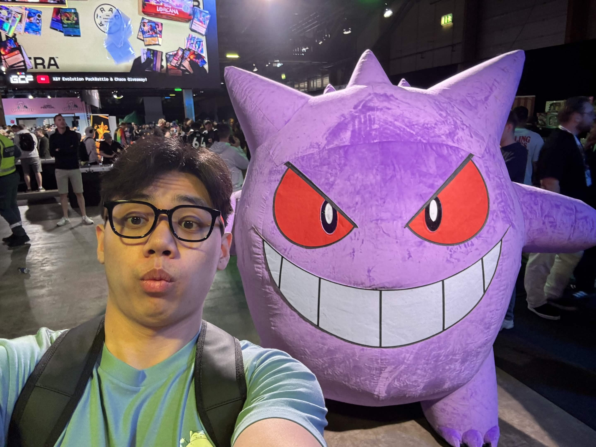
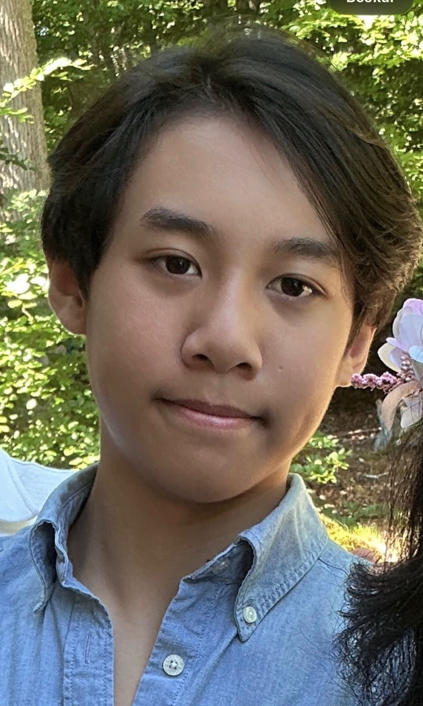
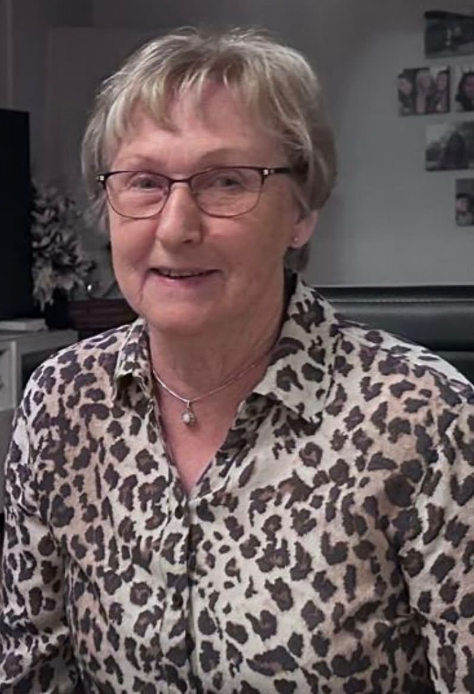
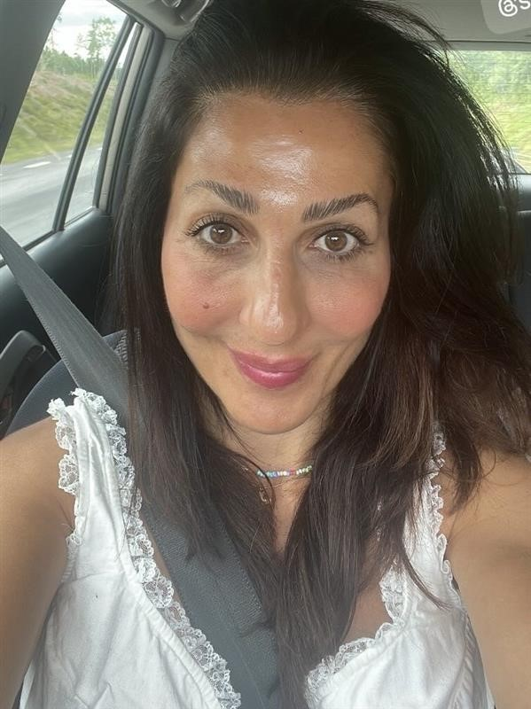

Kvällens värdar
Toast Masters/Toastmadamer
Våra toastmasters och toastmadamer leder kvällen och ser till att programmet flödar smidigt. Vill du hålla tal? Hör av dig till dem!

55 åring arkeolog som har glädjen att lärt känna Mikael under våra studier i Lund. När jag inte är på bröllop tycker jag bland annat om kultur, att vara ute i naturen, och att umgås.

Jag heter Tito Kong och är brudens äldsta bror. Jag utbildade mig inom internationell marknadsföring och ledarskap i Nederländerna. Numera arbetar jag som account manager på ett nederländskt företag. Mina fritidsintressen är att lyssna på musik 🎶 och fixa med huset.

Rötterna i Skåne men smålänning sedan 25 år. Väninna till Linn sedan drygt 20 år, mer nu de sista åren sedan Linn blivit min nya skidkompis. Får se om jag kan undkomma hennes planer på att köra Vasaloppet (hela!). Hoppas Micke vill ta över rollen som skidkompis just den dagen.
Siffernissa till yrket, dvs ekonom, sitter mest vid datorn dagarna i ända.

Född och uppvuxen i Småland, med 25 års erfarenhet från England inom studier, entreprenörskap och ledarskap. Efter att ha återvänt till Sverige arbetar Anna-Maria Vojin som gymnasielärare i juridik, engelska, tyska och företagsekonomi. Som kvällens toastmaster och med vana att leda människor och skapa struktur ser hon till att kvällens program med talarlistan och stämningen flyter på smidigt – med både ordning och glimten i ögat.
Frågor till dig
För att toastmaster ska kunna göra en kort och trevlig presentation av alla gäster under bröllopet, ber vi dig att svara på följande frågor:
• Är du brudens eller brudgummens släkt/vänner?
• Vad arbetar du med? (Om du är pensionär får du gärna berätta vad du arbetade med tidigare.)
• Vad gör du helst på din fritid?
• Vilka är dina största intressen eller hobbyer?
• Finns det någon plats som betyder extra mycket för dig?
• Hur skulle du beskriva dig själv med några få ord?
Vänligen besvara samtliga frågor och skicka dina svar till Anna-Maria Vojin senast den 20/07-2026. Försök att inte lämna någon fråga obesvarad – ju mer vi vet om dig, desto roligare och mer personlig blir presentationen!
VIP & Bröllopssällskap
De viktigaste personerna

Jag heter H.E. Sawathey Pothitey och är brudens mor.
För närvarande tjänstgör jag som ledare för delegationen vid Högsta rådet för konsultation och rådgivning, med en rang som motsvarar vice premiärminister (Kambodja) 🇰🇭
Jag har ett stort intresse för politik och följer noggrant utvecklingen både i mitt hemland och internationellt. Jag tycker också om att ta hand om mig själv och värdesätter ett välvårdat och elegant yttre.
På min fritid engagerar jag mig gärna i välgörenhetsarbete och hjälper fattiga och behövande genom att dela ut donationer och stöd. Jag värdesätter familjen högt. Att bidra till samhället, hjälpa andra och samtidigt vårda nära relationer är viktiga delar av mitt liv.

Jag heter Jeff Rattanak Sokwan Kong och är brudens äldsta son. Har tagit en kandidat examen inom Civilekonomi inom finans. Har stor intresse för sporter så som fotboll, volleyboll och badminton. Håller på Arsenal FC inom fotbollen. Älskar Pokemon och One Piece då jag är en stor samlare. Väldigt stolt son över min mammas prestationer och resa hon har gjort under sitt liv kunde inte vara mer tacksam över den mor jag har.

Jag heter Alex Kong och är brudens yngsta son. Jag ska börja nionde klass nu till nästa termin. Har stort intresse för ishockey och spelar för Värnamo Tigers. Gillar även att spela spel och tillbringa tid med vänner på fritiden.

Jag heter Birgit Jönsson och är brudgummens mamma. Jag har arbetat inom akutsjukvården under många år, där jag med stort engagemang och omtanke har hjälpt människor i deras mest utsatta stunder. På fritiden har jag haft ett stort intresse för motorcyklar och njutit av många mil på vägarna. Numera värdesätter jag särskilt de trevliga fikastunderna med vänner och gamla kollegor, där skratt, minnen och goda samtal får ta plats.

Linn Kong är en varm vän som jag har stått nära i över 20 år. Vår vänskap började i Värnamo och har hållit stark genom åren, trots att jag bor i Borås idag med Peter och fått en liten dotter som heter Lill.
Som den kreatör jag är, är jag Set-Designer på Linns bröllop. Vi skall få ihop den svenska kulturen med Kambodjas kulturarv, en underbar mix!
Vill du hålla tal?
Kontakta toastmadame Anna-Maria Vojin för att boka in dig i programmet.
Kontakta Anna-Maria